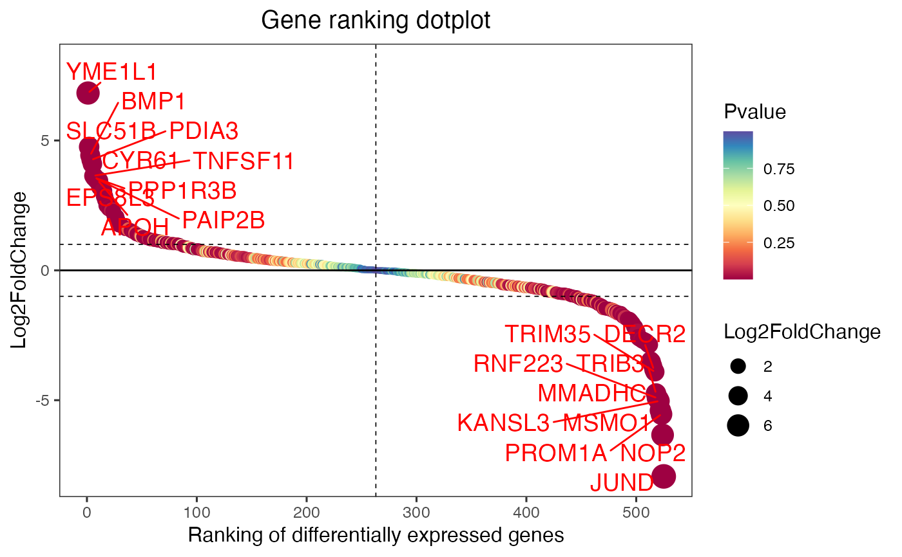
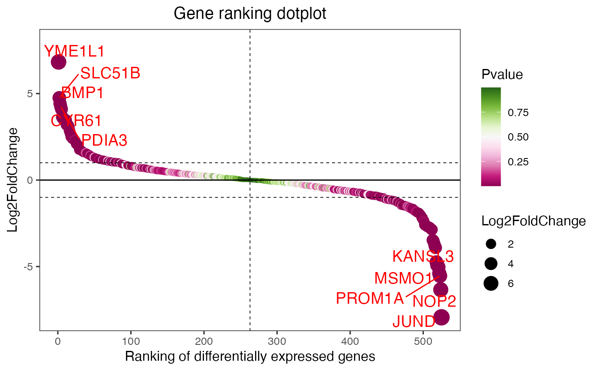
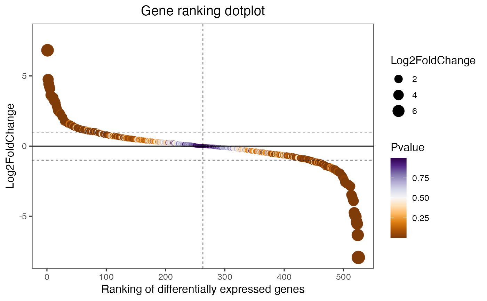

Gene ranking dotplot for visualizing differentailly expressed genes.
Source:R/gene_rank_plot.R
gene_rank_plot.RdGene ranking dotplot for visualizing differentailly expressed genes.
Usage
gene_rank_plot(
data,
log2fc = 1,
palette = "Spectral",
top_n = 10,
genes_to_label = NULL,
label_size = 5,
base_size = 12,
title = "Gene ranking dotplot",
xlab = "Ranking of differentially expressed genes",
ylab = "Log2FoldChange"
)Arguments
- data
Dataframe: All DEGs of paired comparison CT-vs-LT12 stats dataframe (1st-col: Genes, 2nd-col: log2FoldChange, 3rd-col: Pvalue, 4th-col: FDR).
- log2fc
Numeric: log2(FoldChange) cutoff log2(2) = 1. Default: 1.0, min: 0.0, max: null.
- palette
Character: color palette used for the point. Default: "spectral", options: 'Spectral', 'BrBG', 'PiYG', 'PRGn', 'PuOr', 'RdBu', 'RdGy', 'RdYlBu', 'RdYlGn'.
- top_n
Numeric: number of top differentailly expressed genes. Default: 10, min: 0.
- genes_to_label
Character: a vector of selected genes. Default: "NULL".
- label_size
Numeric: gene label size. Default: 5, min: 0.
- base_size
Numeric: base font size. Default: 12, min: 0.
- title
Character: main plot title. Default: "Gene ranking dotplot".
- xlab
Character: title of the xlab. Default: "Ranking of differentially expressed genes".
- ylab
Character: title of the ylab. Default: "Log2FoldChange".
Examples
# 1. Library TOmicsVis package
library(TOmicsVis)
# 2. Use example dataset
data(degs_stats)
head(degs_stats)
#> Gene log2FoldChange Pvalue FDR
#> 1 A1I3 -1.13855748 0.000111040 0.000862478
#> 2 A1M 0.59076131 0.070988041 0.192551708
#> 3 A2M 0.09297827 0.819706797 0.913893947
#> 4 A2ML1 -0.26940689 0.745374782 0.874295125
#> 5 ABAT 1.24811621 0.000001440 0.000016800
#> 6 ABCC3 -0.72947545 0.005171574 0.024228298
# 3. Default parameters
gene_rank_plot(degs_stats)
#> Warning: Using `size` aesthetic for lines was deprecated in ggplot2 3.4.0.
#> ℹ Please use `linewidth` instead.
#> ℹ The deprecated feature was likely used in the TOmicsVis package.
#> Please report the issue at
#> <https://github.com/benben-miao/TOmicsVis/issues/>.

# 4. Set top_n = 5
gene_rank_plot(degs_stats, top_n = 5, palette = "PiYG")

# 5. Set genes_to_label = c("SELL","CCR7","KLRG1","IL7R")
gene_rank_plot(degs_stats, genes_to_label = c("SELL","CCR7","KLRG1","IL7R"), palette = "PuOr")
#> Warning: Removed 4 rows containing missing values or values outside the scale range
#> (`geom_text_repel()`).
